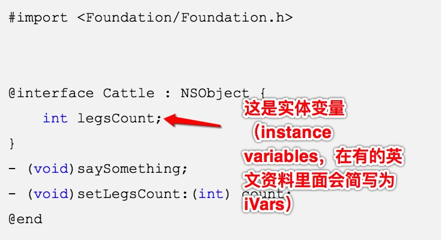

##self和super区别
要点：
- self调用自己方法，super调用父类方法
- self是类，super是预编译指令
- 【self class】和【super class】输出是一样的
self和super底层实现原理：
- 当使用 self 调用方法时，会从当前类的方法列表中开始找，如果没有，就从父类中再找；而当使用 super 时，则从父类的方法列表中开始找，然后调用父类的这个方法。
- 当使用 self 调用时，会使用
objc_msgSend函数：id objc_msgSend(id theReceiver, SEL theSelector, ...)。第 一个参数是消息接收者，第二个参数是调用的具体类方法的selector，后面是selector方法的可变参数。以[self setName:]为例，编译器会替换成调用objc_msgSend的函数调用，其中theReceiver是self，theSelector是@selector(setName:)，这个selector是从当前self的class的方法列表开始找的setName，当找到后把对应的selector传递过去。 - 当使用
super调用时，会使用objc_msgSendSuper函数：id objc_msgSendSuper(struct objc_super *super, SEL op, ...)第一个参数是个objc_super的结构体，第二个参数还是类似上面的类方法的selector，
struct objc_super {
id receiver;
Class superClass;
};
当编译器遇到 [super setName:] 时，开始做这几个事：
1）构建 objc_super 的结构体，此时这个结构体的第一个成员变量 receiver 就是子类，和 self 相同。而第二个成员变量 superClass 就是指父类
调用 objc_msgSendSuper 的方法，将这个结构体和 setName 的 sel 传递过去。
2）函数里面在做的事情类似这样：从 objc_super 结构体指向的 superClass 的方法列表开始找 setName 的 selector，找到后再以 objc_super->receiver 去调用这个 selector